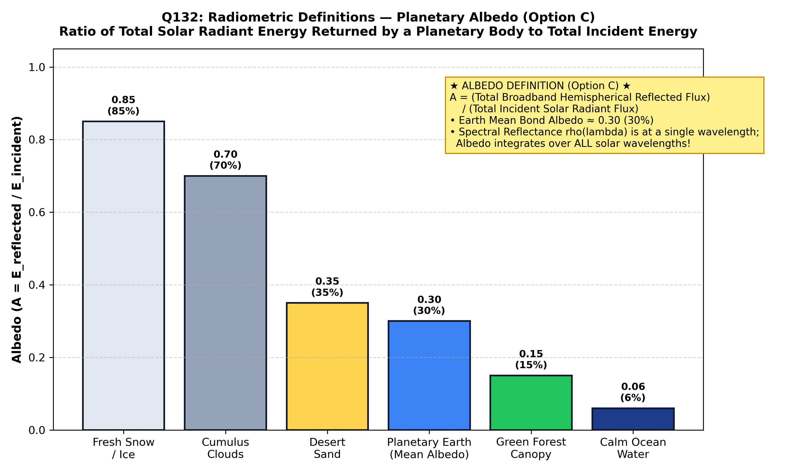

The term albedo (derived from the Latin albedo, meaning "whiteness") was introduced into photometry by Johann Heinrich Lambert in his 1760 treatise Photometria. In planetary astronomy, climatology, and remote sensing, albedo is a fundamental dimensionless physical quantity defining the reflectivity of an astronomical body.
By international astrophysical definition, the Bond Albedo (also termed planetary albedo, $A$) is defined as the ratio of the total solar radiant energy reflected and scattered into space across all wavelengths and directions to the total solar radiant energy incident upon the planetary body (Hartmann; Holton):
| Reflectance Metric | Mathematical Definition | Spectral & Spatial Scope | Distinction |
|---|---|---|---|
| ALBEDO (Bond / Planetary Albedo) (Option C) | $$A = \frac{\Phi_{\text{returned}}}{\Phi_{\text{incident}}}$$ | Broadband & Hemispherical (Global): Integrated over the entire electromagnetic spectrum ($0$ to $\infty$) and all scattering angles ($4\pi$ steradians). | Quantifies the total global energy fraction rejected by the planetary system into space. |
| Spectral Reflectance ($\rho_\lambda$) (Option A) | $$\rho(\lambda) = \frac{\Phi_r(\lambda)}{\Phi_i(\lambda)}$$ | Narrowband: Evaluated at a single specific discrete wavelength $\lambda$ or narrow sensor band (e.g., $0.66\text{ }\mu\text{m}$). | Varies dramatically across the spectrum (e.g. vegetation has low red reflectance but high NIR reflectance). |
| Reflectance Factor (Option B) | $$R(\theta, \phi) = \frac{\Phi_{\text{sample}}}{\Phi_{\text{Lambertian}}}$$ | Bidirectional (BRF): Ratio of radiant flux reflected by target to that of an ideal lossless Lambertian diffuser under identical viewing geometry. | Used in laboratory and field spectroradiometry; directional, not global integrated energy. |

The total solar irradiance intercepted by Earth's cross-sectional area ($\pi R_E^2$) is $S_0 \cdot \pi R_E^2$, where the solar constant $S_0 \approx 1361\text{ W/m}^2$. Distributed over the spherical Earth area ($4\pi R_E^2$), mean incoming solar flux is $S_0/4 \approx 340\text{ W/m}^2$. Satellite measurements from NASA's CERES mission confirm that the Earth returns approximately $102\text{ W/m}^2$ back into space, yielding Earth's average planetary albedo:
The remaining $70\%$ is absorbed by the atmosphere and surface, driving Earth's climate and geological weathering cycles.
By international astronomical and climatological definition (Hartmann; Holton; Bangar, p. 209), the Albedo (specifically the Bond Albedo) is the ratio of the total electromagnetic solar radiant energy reflected/returned by a planet into space across all wavelengths and directions to the total solar radiant energy incident upon it.
Reflectance is generally a wavelength-dependent (spectral) or directional surface property ($\rho_\lambda$). The question specifies the total solar radiant energy returned by an entire planetary body, which is formally designated as the planet's albedo.
Reflectance factor (e.g. Bidirectional Reflectance Factor, BRF) is a directional laboratory and field metric comparing the radiance of a target to a standard white Spectralon panel. It is not the total global planetary energy ratio.
Incorrect, because Albedo is the precise textbook definition.
| Terrestrial Surface / Planetary Body | Typical Albedo Range ($A$) | Physical Reason for Reflectivity | Climatic / Geological Significance |
|---|---|---|---|
| Fresh Dry Snow | $0.80\text{--}0.90$ ($80\text{--}90\%$) | Multiple refractive scattering in transparent ice micro-crystals | Drives positive ice-albedo climate feedback loops |
| Thick Stratocumulus Clouds | $0.60\text{--}0.85$ ($60\text{--}85\%$) | Dense Mie scattering by spherical water droplets | Major contributor to Earth's $30\%$ planetary albedo |
| Dry Desert Quartz Sand | $0.35\text{--}0.45$ ($35\text{--}45\%$) | High quartz purity, low moisture, high surface roughness | Desert radiative cooling anomalies |
| Green Forest Canopy | $0.10\text{--}0.20$ ($10\text{--}20\%$) | Strong chlorophyll absorption in blue and red bands | Low albedo; acts as terrestrial thermal heat sink |
| Calm Deep Ocean Water | $0.05\text{--}0.10$ ($5\text{--}10\%$) | High optical penetration, low normal Fresnel reflection ($2\%$) | Absorbs over $90\%$ of solar energy; drives ocean thermal currents |
| Earth as a Whole (Planetary) | $0.29\text{--}0.31$ ($\approx 30\%$) | Composite average of clouds ($20\%$), surface ($9\%$), and atmosphere ($1\%$) | Governs Earth's effective radiating equilibrium temperature ($255\text{ K}$) |
| The Moon (Planetary Bond Albedo) | $0.12$ ($12\%$) | Dark basaltic maria and impact regolith; no atmosphere or clouds | Absorbs almost all incident sunlight; extreme diurnal temperature swings |
| Venus (Planetary Bond Albedo) | $0.77$ ($77\%$) | Dense global sulphuric acid ($\text{H}_2\text{SO}_4$) cloud deck | Reflects three-quarters of all sunlight back to space |